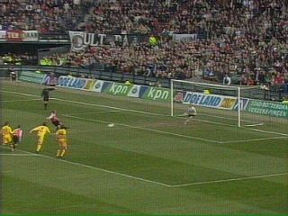

|
Feyenoord - Roda JC (3-0) 28 maart 2004 |
In de 16e min. scoort Buffel 1-0.
Kone ontdoet zich handig van twee Feyenoorders
maar zijn pass wordt vervolgens veel te slap door
Van Dijk op doelman Zoetebier geschoten.
Via Filipovic komt de bal bij Redan. De spits
krijgt de bal onvoldoende onder controle om hem
in het net te werken.
Een doelpunt van Pardo wordt afgekeurd wegens
buitenspel.

Een kleine vergissing dus van Van Hulten c.a.
Brouwers lijkt in een fel duel met Lurling hands
te maken.
Nadat de verdediger op de grond ligt lijkt hij ook
nu de bal aan te raken. De scheidsrechter geeft
een strafschop.
De gebruikelijke protesten met het gebruikelijke
resultaat....

Kuijt verzilvert de penalty: 2-0 (58').
Vloet wordt wegens aanhoudende kritiek naar de
catacomben verbannen.
Ebi Smolarek brengt de eindstand op 3-0 (74').
Na deze nederlaag is de kans op rechtstreekse
deelname aan UEFA-voetbal verkeken. De achterstand
op Heerenveen is opgelopen tot 7 punten. Op de
ranglijst blijft Roda 6e.
Meer foto's op Feyenoord Foto Fansite